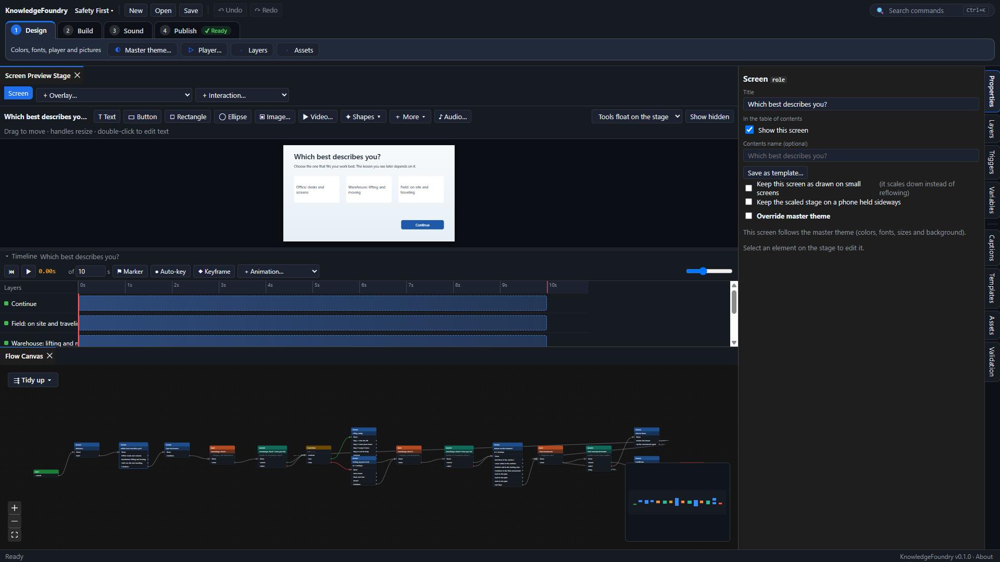

KnowledgeFoundry: User Guide
How to do everything the app can do, grouped by the stage of the work. If you are new, start by opening one of the example courses (Help → Example courses) and taking it apart.
In this guide:
- Getting started: The workspace · Example courses · Your project is one file · Open a recent project · Switch the right-hand panels
- Build the course: Build the course flow (the Flow Canvas) · Tidy up the Flow Canvas · Start from a template · Keep values in variables · Do math with variables (formulas)
- Lay out a screen: Arrange and animate a screen · The floating palette on the stage · Choose where the tools for the selected item appear · Select, group and arrange items · Copy, cut and paste items · Set when an item appears and disappears (start and end times) · Set the reading order · Small screens and the phone view
- Make it interactive: Make a screen respond (triggers) · Add overlays (pop-up style or panel style) · Change how an item looks (states) · Mark a point on the timeline (markers) · Add tabs, an accordion, flash cards, a timeline and more (interactions) · Add a hotspot · Add a glossary · Give learners a file to download
- Sound and video: Add narration and captions · Add a video
- Quizzes: Build a quiz
- Look and feel: Set the course look once (the master theme) · Design the player · Add a table of contents
- Check and publish: Check the course for problems · Motion, flashing and sound · Check accessibility before you publish · Publish the course (export)
- Extend and get help: Plugins · Keyboard shortcuts · Need help or version details?
The workspace
The window has four areas. Across the top, the Design, Build, Sound and Publish tabs hold the tools for each stage of the work, roughly in the order you need them. On the left is the Flow Canvas, where the course's screens and logic are cards joined by wires. In the middle is the Screen Preview Stage, where you lay out the selected screen, with the Timeline under it. On the right are the panels: Properties, Layers, Triggers, Variables, Captions, Templates, Assets and Validation (see Switch the right-hand panels).

- Menus: the Design, Build, Sound and Publish menus hold the same tools as the tabs, so you can also reach them with the keyboard (press Alt, then the arrow keys).
- Where a project opens: a file you have saved on this computer opens on the screen you had selected when you last saved it. A file new to this computer, such as one a colleague sent or an example course, opens on the course's first screen.
- Search for any command: press Ctrl+K and type what you want to do, such as "glossary" or "export". Every command in the app is listed there, with its shortcut.
- Undo (Ctrl+Z) and Redo (Ctrl+Y) cover every change to the course, including changes made in dialogs.
- In every dialog, Tab and Shift+Tab stay inside the dialog, and when it closes focus goes back to the button that opened it.
- A message in the status line at the bottom goes away when it is no longer true: a prompt such as Select a Screen first when you select something, and a message about a change or a save when you edit the course again.
- New project (Ctrl+N) starts a small working course: a Start card, a Welcome screen and a Complete card, already wired.